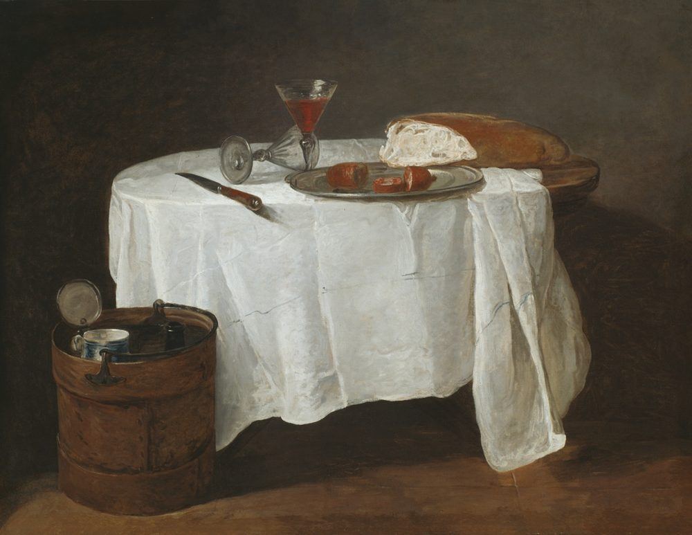
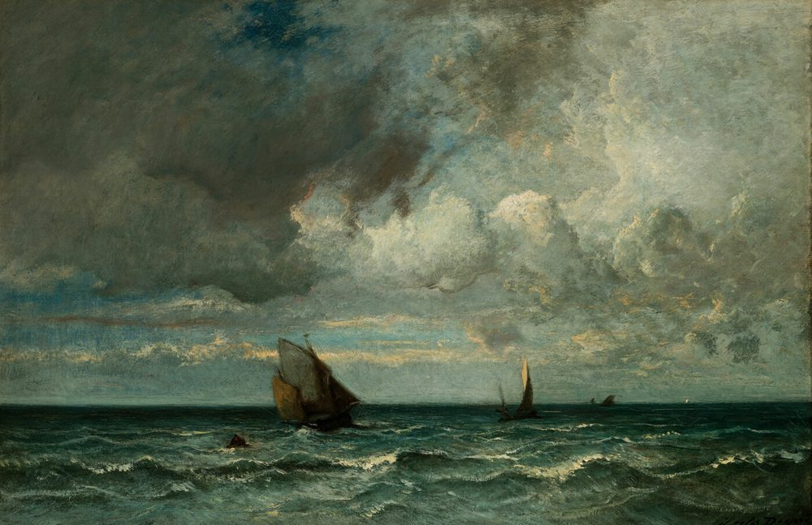
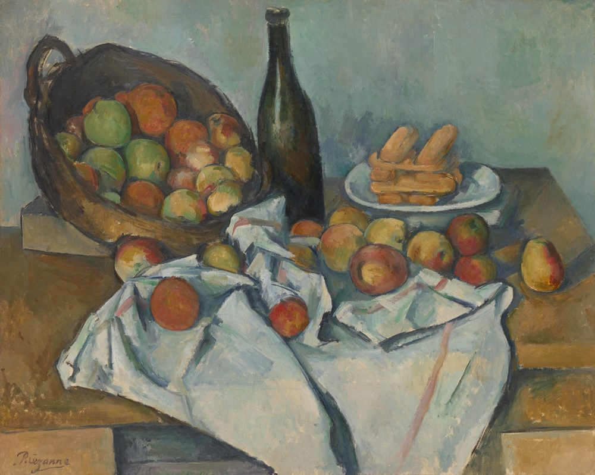

Our Benefits
The benefits of the LORD
He daily loadeth us with benefits. Not sparingly, and not on account — forgiveness, healing, redemption, mercy, and every good and perfect gift, given freely in Christ. This page is a list of what he has actually given, in the words he actually used.
The first benefit
He daily loadeth us with benefits

The Psalmist did not say God provides when we are short. He said he loads us — daily, and in company. The blessings are spiritual first, and they are not rationed out to the faithful in proportion to their faithfulness. They are given, whole, to whoever asks.
“Bless the LORD, O my soul… who satisfieth thy mouth with good [things]; [so] [that] thy youth is renewed like the eagle's.”
Psalm 103:2, 5
“Blessed [be] the God and Father of our Lord Jesus Christ, who hath blessed us with all spiritual blessings in heavenly [places] in Christ.”
Ephesians 1:3
“Every good gift and every perfect gift is from above, and cometh down from the Father of lights, with whom is no variableness, neither shadow of turning.”
James 1:17
“Blessed [be] the Lord, [who] daily loadeth us [with] [benefits], [even] the God of our salvation. Selah.”
Psalm 68:19
“What shall I render unto the LORD [for] all his benefits toward me?”
Psalm 116:12
Every figure here is given. None of them is owed, and none of them is a wage — and the first of them is not a thing at all: he forgiveth all thine iniquities.
He forgiveth all thine iniquities
The first and greatest benefit is pardon. Sin is not overlooked and it is not managed — it is forgiven, the debt cancelled and the record blotted out, at the cost of the blood of his Son. The man who has been forgiven is not merely excused. He is made clean, and then he is sent somewhere to do something.
“If we confess our sins, he is faithful and just to forgive us [our] sins, and to cleanse us from all unrighteousness.”
1 John 1:9
“In whom we have redemption through his blood, [even] the forgiveness of sins.”
Colossians 1:14
“Not by works of righteousness which we have done, but according to his mercy he saved us, by the washing of regeneration, and renewing of the Holy Ghost.”
Titus 3:5
The debt is cancelled and the record blotted out, at the cost of the blood of his Son, and the man who has been forgiven is not merely excused; he is made clean, and then he is sent somewhere. And the same Lord healeth all thy diseases.
He healeth all thy diseases
He is not indifferent to the body's frailties, and he did not save the soul while leaving the body to break. The same Lord who forgives is the Lord who heals — the one who was wounded for our transgressions is the reason we are healed.
“But he [was] wounded for our transgressions, [he] [was] bruised for our iniquities: the chastisement of our peace [was] upon him; and with his stripes we are healed.”
Isaiah 53:5
“He healeth the broken in heart, and bindeth up their wounds.”
Psalm 147:3
“And the prayer of faith shall save the sick, and the Lord shall raise him up; and if he have committed sins, they shall be forgiven him.”
James 5:15
He is not indifferent to the frailty of the body, and he did not save the soul and leave the body to break. Both are his, and Scripture speaks of them in one breath: he redeemeth thy life from destruction.
He redeemeth thy life from destruction
We were not bought back with silver or gold or with any corruptible thing, but with the precious blood of Christ — a lamb without blemish and without spot, given for us. The redemption was paid in full, and the account was closed.
“Forasmuch as ye know that ye were not redeemed with corruptible things, [as] silver and gold, from your vain conversation [received] by tradition from your fathers.”
1 Peter 1:18
“But with the precious blood of Christ, as of a lamb without blemish and without spot.”
1 Peter 1:19
“Being justified freely by his grace through the redemption that is in Christ Jesus:”
Romans 3:24
The redemption was paid in full and the account was closed; nothing can be added to it and nothing taken from it. One benefit cannot be counted at all, and it is peace that passeth understanding.
Peace that passeth understanding

He gives a peace the world cannot give and, so far as experience goes, cannot take away. Not the absence of trouble — he never promised that — but a settled heart inside the trouble, kept for a man whose mind is stayed on him.
“Peace I leave with you, my peace I give unto you: not as the world giveth, give I unto you. Let not your heart be troubled, neither let it be afraid.”
John 14:27
“And the peace of God, which passeth all understanding, shall keep your hearts and minds through Christ Jesus.”
Philippians 4:7
“Thou wilt keep [him] in perfect peace, [whose] mind [is] stayed [on] [thee]: because he trusteth in thee.”
Isaiah 26:3
Not the absence of trouble — he never promised that — but a settled heart inside the trouble. And the peace is not the last of them, because he does not only give us things. He makes his people fruitful.
The benefit that multiplies
He makes his people fruitful
This is the benefit that makes the rest of them possible, and it is worth reading twice. Benefits are not only things you receive; they are things you become. The same love that pardoned you produces patience in you. The same grace that chose you gives you strength to keep walking. He does not only bless the tree — he makes it bear.
“And he shall be like a tree planted by the rivers of water, that bringeth forth his fruit in his season; his leaf also shall not wither; and whatsoever he doeth shall prosper.”
Psalm 1:3
“I can do all things through Christ which strengtheneth me.”
Philippians 4:13
A fruit-bearing life is not a reward for faith; it is what faith looks like from outside. And the Shepherd who makes men fruitful is the same One whose care covers tomorrow: my God shall supply all your need.
My God shall supply all your need

He who clothes the lilies and feeds the birds does not forget his children. The Shepherd provides, and those who seek his kingdom first lack no good thing. Note carefully what this promise is: need, not want. The Shepherd supplies what you require. Everything else is a distraction.
“But my God shall supply all your need according to his riches in glory by Christ Jesus.”
Philippians 4:19
“But seek ye first the kingdom of God, and his righteousness; and all these things shall be added unto you.”
Matthew 6:33
“The Lord is my shepherd; I shall not want.”
Psalm 23:1
He who clothes the lilies and feeds the birds does not forget his children — need and not want, and everything else a distraction. Nor is that the last of them, because the greatest is not a thing at all: I will never leave thee.
I will never leave thee
His greatest benefit is not a thing at all. It is his own presence — the one benefit that cannot be stolen, cannot be spent, and cannot be taken away in the night. He did not leave his people comfortless. He walks with them to the end of the world, and in his presence is fulness of joy.
“[Let] [your] conversation [be] without covetousness; [and] [be] content with such things as ye have: for he hath said, I will never leave thee, nor forsake thee.”
Hebrews 13:5
“Lo, I am with you alway, [even] unto the end of the world. Amen.”
Matthew 28:20
“Thou wilt shew me the path of life: in thy presence [is] fulness of joy; at thy right hand [there] [are] pleasures for evermore.”
Psalm 16:11
His own presence: the one benefit that cannot be stolen, cannot be spent, and cannot be taken away in the night. Nor does it end. Above all the rest of them stands the gift of God is eternal life.
The gift of God is eternal life
Above every earthly benefit stands the gift that never ends. It is held not in our own hand but in his, and no one reaches in to take it. Everything else on this page is a down payment. This is the estate.
“For the wages of sin [is] death; but the gift of God [is] eternal life through Jesus Christ our Lord.”
Romans 6:23
“And I give unto them eternal life; and they shall never perish, neither shall any [man] pluck them out of my hand.”
John 10:28
“And this is the record, that God hath given to us eternal life, and this life is in his Son.”
1 John 5:11
And so a man comes back to where this began. None of this is wages. None of it is owed to anybody, and no man on earth has the standing to pay it out or to call it in. It is given to a citizen of the kingdom, and a citizen is made at the beginning of this, not at the end.
Everything else on this page is a down payment, and this is the estate. None of it is owed to anybody, and no man on earth has the standing to pay it out — which is why what a man does next is a declaration and not a debt: register / payment.
Register / payment
Register to affirm the truth: our conversation is in heaven, and our allegiance belongs to the King of kings, the Lord Jesus Christ. Write with any question, correction, or word of encouragement — all are welcome. Obligatory payments and donations are received in Bitcoin Cash.
- Email apply@maspor.org
- Phone 777 777 7777
- Address 777 Heavenly Way 77737
- Bitcoin Cash bitcoincash:qqz4ru4ewkn8edttrlm4faex7f0r0tvfhvfn4jlmg2
- Currency Bitcoin Cash
Every obligatory payment and every donation is received in Bitcoin Cash, and not one of them is the price of anything. Register; and then the counsel begins, because it is a wall built in two hands.
Questions on Our Benefits
What are the benefits of the LORD?
The ones the Psalmist named and the ones he went on to name in detail: pardon for sin, healing for the body, redemption from destruction, peace for the heart, provision for the need, his own presence, and at the top of the list, life that never ends. Everything above is his own summary, taken from his own book.
Are these benefits earned?
No, and the question matters more than it looks. Every good gift and every perfect gift is from above (James 1:17), given freely in Christ to whoever believes. A benefit you had to earn would not be a benefit; it would be a wage — and the wages of sin are death (Romans 6:23).
Do the benefits show?
They should. The same grace that saves you produces good works (Titus 2:14), and a tree planted by the rivers of water brings forth fruit in its season (Psalm 1:3). We say more about what that fruit is on Our Heritage — including what happens to a branch that never produces any.
What is Bitcoin Cash?
It is cash for the internet. Money that goes from one person to another with no bank, no government, and no company standing in between — no permission asked, and no middleman taking a cut. It arrives in seconds and costs a fraction of a cent. We take it for the same reason anyone takes cash: it belongs to whoever holds it, and what has been given cannot be quietly taken back.
How can I reach you?
By email at the address above, or by post. Questions, corrections, and words of encouragement are all welcome — and if you find something on this site that contradicts the Word, say so and we will deal with it.
May I reuse what is written here?
Scripture quotations are from the King James (Authorized) Version, which is public domain, and are free to use. Our own text may be quoted with a link back to this site.